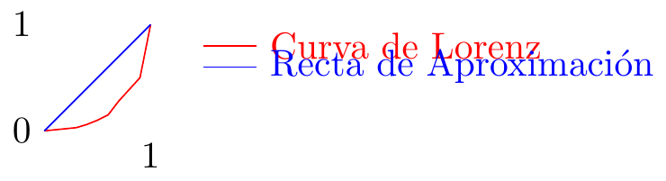

Ayudantía VIII:
Ejercicio I:
Una empresa tiene la siguiente función de producción: \[ Q(K,L)=K^3+2K^2+KL^2+L^3 \]
En el mercado de la empresa, cada unidad producida es vendida por $3 dólares.
Determine la función de la producción media de trabajo.
Determine la función del producto marginal del capital.
Asuma un \(\bar{K}=1\) y una cantidad de trabajadores \(\bar{L}=2\) ¿Cuánto es el retorno del trabajo?
Ejercicio II:
Tenemos la siguiente tabla que representa el porcentaje de población acumulado de la población según su ingreso porcentual acumulado:
| decil: | Ingresos: |
| 0.1 | 0.01 |
| 0.2 | 0.02 |
| 0.3 | 0.03 |
| 0.4 | 0.06 |
| 0.5 | 0.1 |
| 0.6 | 0.15 |
| 0.7 | 0.28 |
| 0.8 | 0.39 |
| 0.9 | 0.5 |
| 1 | 1 |
Calcule la desigualdad con el coeficiente de Gini.
Grafique la curva de Lorenz.
Ejercicio III:
Tenemos la siguiente función de producción: \[ Q(K,L)=7K^2L^3-3K\^3L \]
Calcule las siguientes medidas de forma genérica y calcule según el tipo de media la utilidad si cada producción vale $2 dolares o el tipo de retorno evaluándolas con \(\bar{K}=1\) y un \(\bar{L}=2\):
¿Para qué valor de \(L\), con \(\bar{K}=2\) el retorno de capital es una constante a escala?
Ejercicio IV:
Tenemos un mercado que tiene como funciones de oferta y demanda \(P(Q)=1+Q\) y \(P(Q)=\frac{11-Q}{2}\).
Si se le agrega un precio máximo igual a 2, grafique la situación y calcule los excedentes del oferente y demandante.
Si se le agrega un precio máximo igual a \(\frac{9}{2}\), grafique la situación y calcule la ineficiencia.
RESPUESTA Ejercicio I:
\(\frac{Q(K,L)}{L}=\frac{K^3+2K^2}{L}+KL+L^2\)
\(Q'(K,L)=3K^2+4K+L^2\)
El retorno es la segunda derivada de la producción, por lo que será:
\[ Q''(K,L) = 6L \]
Evaluamos:
\[ Q''(1,2)=6\cdot 1=6 \]
Ejercicio II:
- Usamos la formula:
\[ G=1-\left|\sum_{k=0}^{n-1}\left(X_{k+1}-X_k\right)\left(Y_{k+1}+Y_k\right)\right| \]
Las condiciones extremas que se pueden cumplir son:
\(G=0\): todos los ciudadanos tienen los mismos ingresos.
\(G=1\): todos los ingresos los tiene solo 1 ciudadano.
Y esto da: \[ G=1-0.01+0.01+0.01+0.03+0.04+0.05+0.013+0.011+0.011+0.05 \]
\[ G=1-0.235 \] \[ G=0.765 \]
Ejercicio III:
| Medida: | Forma genérica: | Utilidad: |
| Producto marginal del trabajo: | $$21K^2L^2-3K^3$$ | $$\$162$$ |
| Producto marginal del capital: | $$14L^3K-6K^2L$$ | $$\$200$$ |
| Productividad media del trabajo: | $$7K^2L^2-3K^3$$ | $$\$50$$ |
| Productividad media del capital: | $$7L^3K-3K^2L$$ | $$\$100$$ |
| Retornos de trabajo: | $$42K^2L$$ | $$42, \text{es creciente.}$$ |
| Retornos de capital: | $$14K^3 - 3K^3L$$ | $$8, \text{es creciente.}$$ |
\[ \text{ret}(K,L)=14K^3 - 3K^3L \] \[ \text{ret}(4,L)=14\cdot 2^3 - 3\cdot 2^3L=1 \] \[ 14\cdot 8 - 3\cdot 8 L=1 \] \[ 112 - 24L=1 \] \[ 24L=111 \] \[ L=\frac{111}{24} \]
Ejercicio IV: a)
Gráfico:
Primero calculamos el punto de equilibrio (Q,P), esto es igual a:
\[(\frac{11-2}{3}, 1+ \frac{11-2}{3})\]
O también:
\[(\frac{11-2}{2+1}, \frac{11}{2}- \frac{11-2}{2+1})\]
Esto resulta:
\[(3,4)\]
Hacemos el gráfico tomando en cuenta el precio máximo.

Luego calculamos los excedentes:
Importante:
\[P_s(Q)=1+Q \Leftrightarrow Q_s(P)=P-1\] \[P_d(Q)=\frac{11-Q}{2} \Leftrightarrow Q_d(P)=11-2P\]
\[\textrm{EC}=Q_s(2) \cdot (P_d(Q_s(2))-2)+\frac{P_d(0)-P_d(Q_s(2))}{2}\]
\[\textrm{EC}=(2-1) \cdot (\frac{11-(2-1)}{2}-2)+\frac{11/2-(11-(2-1))/2}{2}\]
\[\textrm{EC}=6\]
Gráfico:
Teniendo ya el punto de equilibrio por la parte a, seguimos añadiéndole el precio mínimo y veremos su ineficiencia.
Luego calculamos la ineficiencia, para esto lo tomaremos como la suma de dos triángulos rectángulos y que tengan el mismo valor para el cateto que los une:
\[\textrm{IE} = \frac{\textrm{cateto compartido} \cdot (\textrm{cateto triángulo 1}+\textrm{cateto triángulo 2})}{2}\]
\[\textrm{IE} = \frac{1}{2}(3 - Q_d(4,5))((3-P_s(Q_d(4,5)))+(4,5-3))\]
\[\textrm{IE} = \frac{1}{2}(3 - (11-2(4,5)))((3-(1+(11-2(4,5))))+(4,5-3))\]
\[\textrm{IE} = 0.75\]